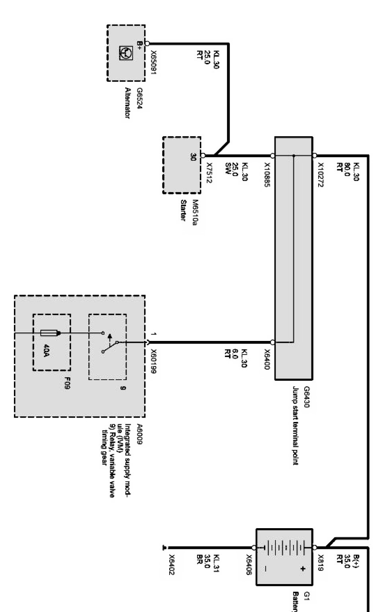
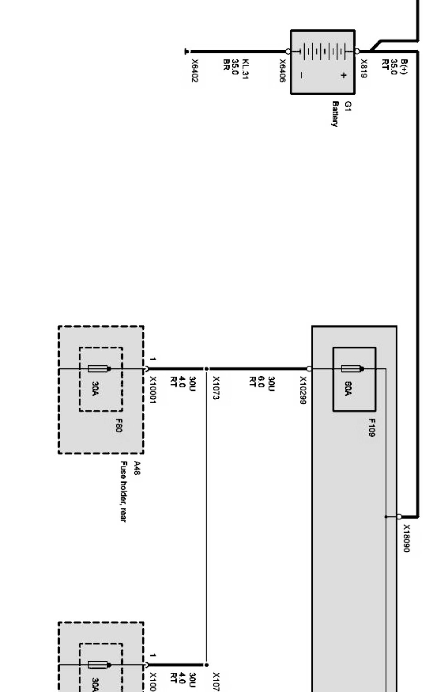
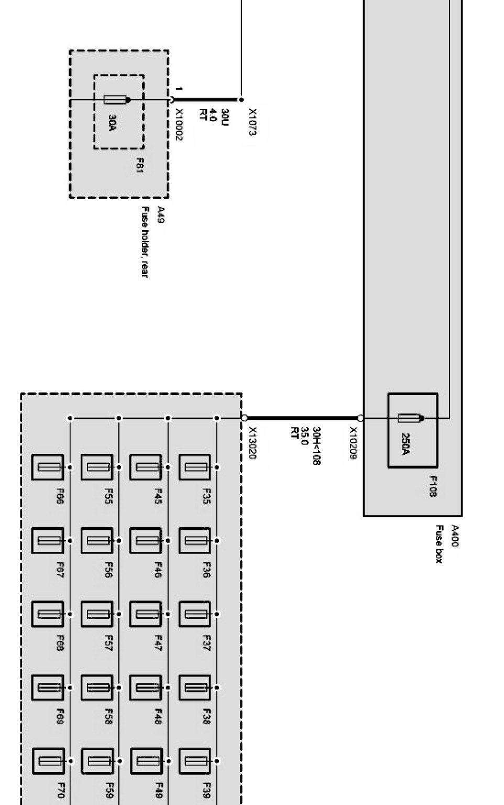
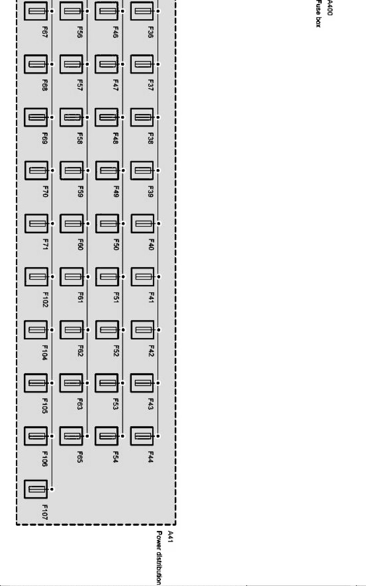

Operation CHARM
: Car repair manuals for everyone.
Home
>>
BMW
>>
2007
>>
X3 3.0si (E83) L6-3.0L (N52K)
>>
Repair and Diagnosis
>>
Diagrams
>>
Electrical Diagrams
>>
Body
>>
Voltage Supply
>>
Power Distribution
>>
Current Distributor, Fuse Supply Term. 30
>>
Fuse Supply, Terminal 30 (X Series_X3-E83 With N52 Engine With Top Hifi System E83 (10-Speaker))
Fuse Supply, Terminal 30 (X Series_X3-E83 With N52 Engine With Top Hifi System E83 (10-Speaker))
Fuse supply, terminal 30 Part 1:

Fuse supply, terminal 30 Part 2:

Fuse supply, terminal 30 Part 3:

Fuse supply, terminal 30 Part 4:
